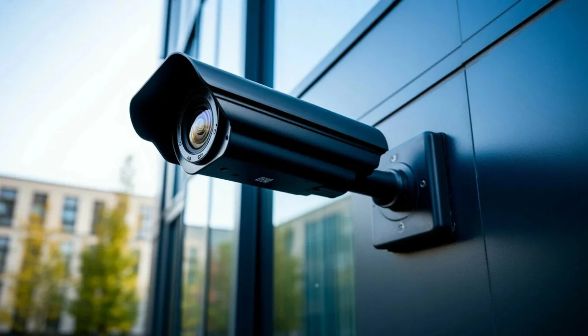
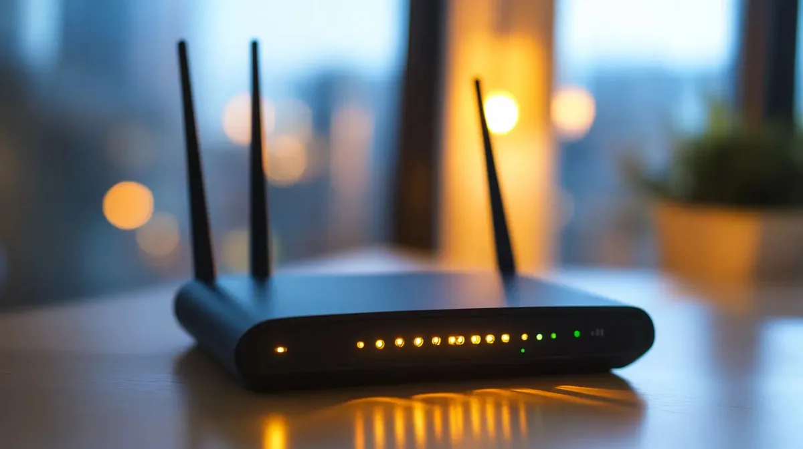

Silivri, Tekirdağ ve Çatalca'da
Kamera Sistemleri ve Network Kurulumu
Securis olarak, yüksek çözünürlüklü IP kamera ağlarından kurumsal siber duvar sistemlerine kadar tüm teknolojik altyapınızı anahtar teslim kuruyor ve kesintisiz teknik destek sağlıyoruz.
Ücretsiz keşif · Taahhüt yok
Yüksek Çözünürlüklü İzleme
Veri ve Ağ Koruma Kalkanı
Switch & Access Point Çözümleri
Hizmetlerimiz: Kamera, Firewall, Network
İhtiyacınız olan tüm zayıf akım ve network altyapısını profesyonel standartlarda kuruyoruz.
Kamera Sistemleri Kurulum ve Destek
Ev, ofis veya fabrika alanlarınız için yüksek çözünürlüklü IP kamera sistemlerinin montajı, temiz kablolaması ve arıza durumlarında hızlı teknik destek hizmeti.
Firewall Kurulumu — Şirket Ağınızı Koruyun
Şirket verilerinizi dış siber saldırılardan korumak için FortiGate ve benzeri kurumsal siber duvar ünitelerinin ağınıza entegrasyonu, kural tanımlamaları ve güvenli VPN ayarları.
Switch ve Ağ Yönetimi — Kablolu Ağ Kurulumu
Kablolu ağ trafiğinizin takılmadan, hızlı çalışması için kurumsal yönetilebilir switch cihazlarının montajı, hat bölümlendirmesi (VLAN) ve performans optimizasyonu.
Access Point (Kablosuz İnternet)
İş yerinizde internetin yavaşladığı veya çekmediği tüm "ölü noktaları" yok ediyoruz. Yüksek performanslı Access Point üniteleriyle kesintisiz tek bir Wi-Fi ağı kuruyoruz.
NVR ve Depolama Çözümleri
Kamera kayıtlarınızın geriye dönük güvenle saklanması için NVR (Ağ Kayıt Cihazı) kurulumu, yüksek kapasiteli disk entegrasyonu ve cepten izleme için mobil tanımlamalar.
Nereden Başlamalı? Üç Ana İhtiyaç
Hangi hizmete ihtiyacınız olduğundan emin değilseniz buradan başlayın: sorunu tarif eden üç ana başlık, sizi doğru hizmet sayfasına yönlendirir.

FİZİKSEL GÜVENLİKGözetim ve Kamera Sistemleri
Bina çevresi, giriş noktaları ve iç mekanlar için yüksek çözünürlüklü IP kamera ağları. Doğru açı planlaması, temiz kablolama ve NVR entegrasyonuyla anahtar teslim kurulum.
Siber Güvenlik ve Firewall
Kimlik avı, yetkisiz erişim ve fidye yazılımı tehditlerine karşı FortiGate güvenlik duvarı yapılandırması, erişim kuralları ve şubeler arası şifreli VPN bağlantıları.

KABLOSUZ ALTYAPIKablosuz Ağ ve Access Point
Ölü noktaları ortadan kaldıran, tek SSID altında kesintisiz dolaşım (roaming) sağlayan access point kurulumu. Misafir ağı ayrımı ve yoğun kullanıcı kapasitesi planlaması.
Yerinde Servis Verdiğimiz 9 İlçe
Trakya ve İstanbul Batı bölgesindeki tüm işletmelere yerinde hızlı kurulum ve teknik servis desteği götürüyoruz.
Neden Securis?
Securis, Silivri merkezli; İstanbul Batı ve Trakya bölgesinde IP kamera sistemleri, firewall yapılandırması ve kurumsal ağ altyapısı kuran bir güvenlik ve ağ teknolojileri firmasıdır. Karmaşık teknik süreçleri sadeleştiriyor; son kullanıcının, esnafın ve şirket yöneticilerinin en kolay şekilde yönetebileceği sorunsuz altyapılar inşa ediyoruz.
Kurduğumuz tüm kamera ve internet dağıtım sistemlerini telefonunuzdan tek tıkla izleyip kontrol edebileceğiniz basitlikte teslim ediyoruz. Satış sonrası sunduğumuz hızlı teknik servis desteğiyle de sisteminizi asla yalnız bırakmıyoruz.
Kurulum fotoğraflarımız için Instagram'da bizi takip edin.
Merak Edilenler
Keşif, fiyatlandırma, kurulum süresi ve teknik destek hakkında en çok aldığımız sorular.
Keşif hizmeti ücretli mi?
Kamera sistemi fiyatı neye göre belirlenir?
Kurulum ne kadar sürer?
Kayıtları telefonumdan izleyebilir miyim?
Arıza durumunda ne kadar sürede geliyorsunuz?
Hangi markalarla çalışıyorsunuz?
Hangi bölgelere hizmet veriyorsunuz?
Bizimle İletişime Geçin
Aşağıdaki kanallardan doğrudan bize ulaşın, ihtiyacınız olan sistemi birlikte planlayalım.